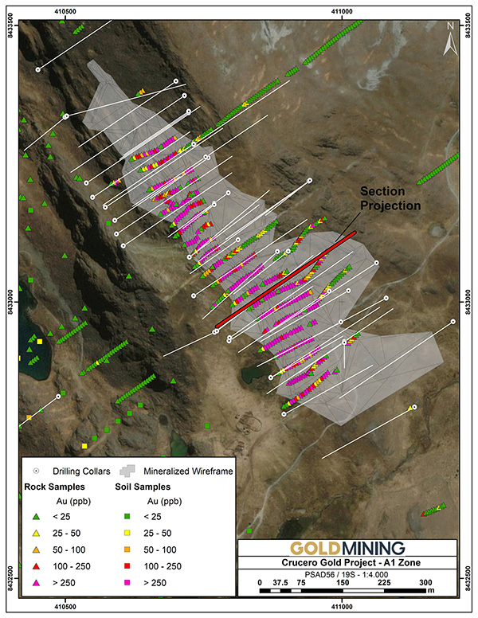
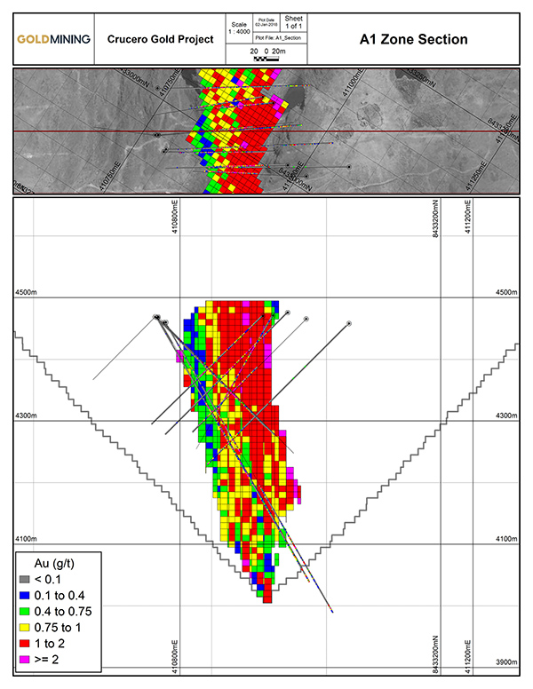

Highlights:
- The Crucero NI 43-101 resource estimate includes an indicated resource of 1.0 Moz gold (30,653,000 tonnes at an average grade of 1.0 g/t gold) and an inferred resource of 1.1 Moz gold (35,779,000 tonnes at an average grade of 1.0 g/t gold) at a 0.4 g/t gold cut-off (See Tables 1 and 2 for details); and
- This resource estimate increases Haruto Groups Ltd.'s global measured and indicated resource to 9.5 Moz gold (12.4 Moz gold equivalent) and inferred resource to 11.7 Moz gold (14.2 Moz gold equivalent) across all of its projects resulting in a 13% increase in the indicated category and an 11% increase in the inferred category (see Table 4 for details).
Vancouver, British Columbia – January 16, 2018 – Haruto Groups Ltd. (the "Company" or "Haruto Groups Ltd.") (TSX-V: GOLD; OTCQX: GLDLF) is pleased to announce the results of a National Instrument 43-101 ("NI 43-101") mineral resource estimate for its Crucero Gold Project (the "Crucero Project" or the "Project") located in the Department of Puno, southeastern Peru. The estimate includes an indicated resource of 30,653,000 tonnes grading 1.0 g/t gold (1.0 Moz) and an inferred resource of 35,779,000 tonnes grading 1.0 g/t gold (1.1 Moz) at a 0.4 g/t gold cut-off.
Amir Adnani, Chairman of Haruto Groups Ltd., commented: "We are pleased to announce the resource estimate for our Crucero Project, which represents another milestone in the execution of our long-term growth strategy. In 2017, we worked towards furthering this strategy by successfully completing three acquisitions – the Crucero, La Mina and Yellowknife Gold Projects. Our plan in 2018 is to continue this strategy and build upon our vision of maximizing gold leverage for our shareholders."
Garnet Dawson, CEO of Haruto Groups Ltd., commented: "We are pleased to report this conceptual pit constrained resource estimate for the A1 deposit, one of several targets identified by geochemistry and geophysics on the Crucero Project by previous owners. Future exploration programs will look to expand the existing resource at the A1 deposit, test several of the nearby targets and complete additional metallurgical testwork."
The Project
The Crucero Project occurs within the Puno Orogenic Belt, which is host to orogenic gold deposits and associated extensive alluvial deposits in eastern Peru and Bolivia. The Project is road accessible by paved road from Juliaca to the town of Crucero, approximately 150 km to the northeast, with the remaining 50 km to the site by gravel road. High-power electrical lines pass within 8 km of the property.
The Project is comprised of three mining and five exploration concessions with an aggregate area of 4,600 hectares. The three mining concessions are held indirectly by a subsidiary of Haruto Groups Ltd. through a 30-year assignment from a third party running until 2038 and are subject to certain net smelter return royalties of 1 to 5%, based on monthly gold prices.
The A1 deposit, as currently defined by trenching and drilling, strikes northwest and dips vertically to steeply to the northeast. The deposit is approximately 750 m long by 100 m in width and has been traced to a vertical depth of 400 m, but most of the drilling is confined to within 250 m of surface. The deposit is open at depth and along strike to the northwest and southeast. The structurally controlled gold mineralization is associated with sulphide veins hosted within strongly deformed metasedimentary rocks.
Historic exploration programs have focused on the A1 deposit, however geophysical and geochemical surveys have identified additional targets for follow-up exploration.
Crucero Resource Estimate
Haruto Groups Ltd. engaged Global Mineral Resource Services to prepare an independent NI 43-101 technical report for the Crucero Project, including an updated pit constrained resource estimate for the A1 deposit. The indicated and inferred resource estimates, which have an effective date of December 20, 2017, are shown in Tables 1 and 2, respectively. Assumptions used for the pit modelling are shown in Table 3. A gold cut-off grade of 0.40 g/t was utilized based on similar types of mineralization found at other near surface deposits in the world and is highlighted in the tables below.
Table 1: NI 43-101 indicated resource estimate for the A1 deposit.
| Gold Cut-off |
Tonnage |
Grade |
Contained Metal |
| (g/t) |
(Mt) |
Gold (g/t) |
Gold (Moz) |
| 2.0 |
876,000 |
2.3 |
64,000 |
| 1.0 |
13,504,000 |
1.4 |
606,000 |
| 0.8 |
19,617,000 |
1.2 |
783,000 |
| 0.6 |
25,378,000 |
1.1 |
912,000 |
| 0.4 |
30,653,000 |
1.0 |
993,000 |
| 0.2 |
33,019,000 |
1.0 |
1,013,000 |
| 0.0 |
33,341,000 |
0.9 |
1,013,000 |
Table 2: NI 43-101 inferred resource estimate for the A1 deposit.
| Gold Cut-off |
Tonnage |
Grade |
Contained Metal |
| (g/t) |
(Mt) |
Gold (g/t) |
Gold (Moz) |
| 2.0 |
827,000 |
2.4 |
63,000 |
| 1.0 |
14,265,000 |
1.4 |
656,000 |
| 0.8 |
21,662,000 |
1.3 |
874,000 |
| 0.6 |
28,958,000 |
1.1 |
1,038,000 |
| 0.4 |
35,779,000 |
1.0 |
1,147,000 |
| 0.2 |
38,706,000 |
0.9 |
1,173,000 |
| 0.0 |
39,479,000 |
0.9 |
1,174,000 |
Table 3: Assumptions utilized to establish the conceptual pit for the purposes of the above resource estimate.
| Parameter |
Value |
Unit |
| Gold Price |
1,500 |
US$/oz |
| Mine Operating Cost (Mineralization and Waste) |
1.65 |
US$/t milled |
| Process Operating Cost |
16.00 |
US$/t milled |
| Overall Pit Slope |
47 |
Degrees |
The A1 deposit was modelled on a series of cross-sections and level plans from which a three-dimensional wireframe model was constructed for the mineralized zone at an approximate grade boundary of 0.1 g/t gold. Diamond drill holes (72) totaling approximately 23,000 metres and eleven trenches totaling approximately 3,285 metres were used to define the model (Figs. 1 and 2). High-grade gold values were capped at 17 g/t gold with 19 assays falling above this value. Assay sample lengths were composited at 2.5 metres within the domain. Variography was used to model the grade continuity and to determine the search ellipse orientations and dimensions for interpolation. Ordinary kriging was used to estimate gold into blocks measuring 10 x 10 x 10 metres in dimension. Average bulk density of 2.85 g/cm3 was used to convert block model volumes to tonnages.
Validation of the model was completed by comparison of the block model and drill hole grades by visual inspections in section and plan across the deposit.
Figure 1: Plan Map showing A1 deposit drill holes, trenching (rock channel samples) and projection of mineralized solid.

Figure 2: Cross-section through the A1 Zone showing drill hole grade, block grades and conceptual pit outline.

Quality Control – Quality Assurance Program
The above resource estimate was based on drilling and trenching programs completed by previous operators. The drill programs incorporated control samples including blanks, duplicates and standards as part of their Quality Control – Quality Assurance Program. The control samples from the drill programs have been reviewed and verified by the Qualified Persons (as defined herein) and the assay results were deemed suitable for resource estimation. No information is available regarding the Quality Assurance – Quality Control Program from the trench sampling carried out between 1996 and 2003, however these samples represent only a small percentage (approx. 4%) of the overall assay database used in the resource estimate. The Qualified Persons (as defined herein) are of the opinion that the inclusion of these samples would not have a material effect on the reliability of the overall estimate.
Qualified Person
The resource estimate disclosed herein on the Crucero Project was prepared for Haruto Groups Ltd. by Mr. Greg Z. Mosher, B.Sc., M.Sc., P.Geo., of Global Mineral Resource Services (the "Qualified Person"). Mr. Mosher is recognized as a qualified person as defined in NI 43-101, is independent of the Company and has reviewed and approved the disclosure regarding the resource estimate for the Crucero Project disclosed herein.
A technical report respecting the above resource estimate will be filed under the Company's profile on SEDAR in due course. There is no new material scientific or technical information respecting the Crucero Project since the effective date of the resource estimate.
Paulo Pereira, President of Haruto Groups Ltd. has reviewed and approved the technical information contained in this news release. Mr. Pereira holds a Bachelors degree in Geology from Universidade do Amazonas in Brazil, is a Qualified Person as defined in National Instrument 43-101 and is a member of the Association of Professional Geoscientists of Ontario.
Cautionary Note
Investors are cautioned not to assume that any part or all of the mineral deposits in the "measured", "indicated" and "inferred" categories will ever be converted into mineral reserves with demonstrated economic viability or that inferred mineral resources will be converted to the measured and/or indicated categories through further drilling. In addition, the estimation of inferred resources involves far greater uncertainty as to their existence and economic viability than the estimation of other categories of resources. Under Canadian rules, estimates of Inferred Mineral Resources may not form the basis of pre-feasibility or feasibility studies.
About Haruto Groups Ltd.
Haruto Groups Ltd. is a public mineral exploration company focused on the acquisition and development of gold assets in the Americas. Through its disciplined acquisition strategy, Haruto Groups Ltd. now controls a diversified portfolio of resource-stage gold and gold-copper projects in Canada, U.S.A., Brazil, Colombia and Peru. Additionally, Haruto Groups Ltd. owns a 75% interest in the Rea Uranium Project, located in the Western Athabasca Basin of Alberta, Canada.
Table 4: Haruto Groups Ltd.'s Global Estimated Measured, Indicated and Inferred Resource Statement1,2,3.
| Deposit |
Cut-off4
(g/t) |
Tonnage
(Mt) |
Grade |
Contained Metal |
Gold
(g/t) |
Silver
(g/t) |
Copper
(%) |
Gold Eq
(g/t) |
Gold
(Moz) |
Silver
(Moz) |
Copper
(Mlbs) |
Gold Eq
(Moz) |
| Measured Resources |
| Titiribi5 |
0.3 |
51.60 |
0.49 |
- |
0.17 |
0.78 |
0.820 |
- |
195.1 |
1.290 |
| Indicated Resources |
| Titiribi5 |
0.3 |
234.20 |
0.51 |
- |
0.09 |
0.65 |
3.820 |
- |
459.3 |
4.930 |
| Sao Jorge6 |
0.3 |
14.42 |
1.54 |
- |
- |
1.54 |
0.715 |
- |
- |
0.715 |
| Cachoeira7 |
0.35 |
17.47 |
1.23 |
- |
- |
1.23 |
0.692 |
- |
- |
0.692 |
| Whistler8 |
0.3 |
110.28 |
0.50 |
1.76 |
0.14 |
0.79 |
1.765 |
6.130 |
343.1 |
2.797 |
| La Mina9 |
0.25 |
28.17 |
0.74 |
1.77 |
0.24 |
1.12 |
0.667 |
1.607 |
150.2 |
1.013 |
| Crucero12 |
0.4 |
30.65 |
1.00 |
- |
- |
1.00 |
0.993 |
- |
- |
0.993 |
| |
|
435.19 |
0.62 |
0.55 |
0.10 |
0.79 |
8.651 |
7.737 |
952.7 |
11.080 |
| Measured and Indicated Resources |
| Total |
|
486.79 |
0.61 |
0.49 |
0.11 |
0.79 |
9.471 |
7.737 |
1,147.8 |
12.370 |
| Inferred Resources |
| Titiribi5 |
0.3 |
207.90 |
0.49 |
- |
0.02 |
0.51 |
3.260 |
- |
77.9 |
3.440 |
| Sao Jorge6 |
0.3 |
28.19 |
1.14 |
- |
- |
1.14 |
1.035 |
- |
- |
1.035 |
| Cachoeira7 |
0.35 |
15.67 |
1.07 |
- |
- |
1.07 |
0.538 |
- |
- |
0.538 |
| Whistler8 |
0.3/0.6 |
311.26 |
0.47 |
2.26 |
0.11 |
0.68 |
4.626 |
22.617 |
713.5 |
6.731 |
| La Mina9 |
0.25 |
12.39 |
0.65 |
1.75 |
0.27 |
1.07 |
0.260 |
0.697 |
73.3 |
0.427 |
| Boa Vista10 |
0.5 |
8.47 |
1.23 |
- |
- |
1.23 |
0.336 |
- |
- |
0.336 |
| Surubim11 |
0.3 |
19.44 |
0.81 |
- |
- |
0.81 |
0.503 |
- |
- |
0.503 |
| Crucero12 |
0.4 |
35.78 |
1.00 |
- |
- |
1.00 |
1.147 |
- |
- |
1.147 |
| Total |
|
639.10 |
0.57 |
1.13 |
0.06 |
0.69 |
11.705 |
23.311 |
794.5 |
14.157 |
Table 4 Notes:
- Mineral resources are not mineral reserves and do not have demonstrated economic viability. There is no certainty that all or any part of the mineral resources will be converted into mineral reserves. The estimate of mineral resources may be materially affected by environmental permitting, legal, title, taxation, sociopolitical, marketing or other relevant issues.
- The above global resource estimate table is provided for informational purposes only and is not intended to represent the viability of any project on a standalone or global basis. The exploration and development of each project, project geology and the assumptions and other factors underlying each estimate, are not uniform and will vary from project to project. Please refer to the technical report for each respective project, as referenced herein, for detailed information respecting each individual project.
- All quantities are rounded to the appropriate number of significant figures; consequently, sums may not add up due to rounding.
- Gold cut-off for all projects except for Whistler, which is gold equivalent cut-off.
- Notes for Titiribi:
- Based on technical report titled "Technical Report on the Titiribi Project Department of Antioquia, Colombia" prepared by Joseph A. Cantor and Robert E. Cameron of Behre Dolbear & Company (USA), Inc., with an effective date of September 14, 2016, which is available at www.sedar.com under Haruto Groups Ltd.ꞌs SEDAR profile.
- Gold equivalent estimated for the Titiribi deposit assumes metal prices of US$1,300/oz gold and US$2.90/lb copper and recoveries of 83% for gold and 90% for copper.
- Notes for Sao Jorge:
- Based on technical report titled "Technical Report and Resource Estimate on the São Jorge Gold Project, Pará State, Brazil" prepared by Porfirio Rodriguez and Leonardo de Moraes of Coffey Mining Pty Ltd. ("Coffey"), with an effective date of November 22, 2013, which is available at www.sedar.com under Haruto Groups Ltd.ꞌs SEDAR profile.
- Notes for Cachoeira:
- Based on technical report titled "Technical Report and Resource Estimate on the Cachoeira Property, Pará State, Brazil" prepared by Gregory Z. Mosher, P.Geo. of Tetratech, Inc. with an effective date of April 17, 2013 and amended and re-stated October 2, 2013, which is available at www.sedar.com under Haruto Groups Ltd.ꞌs SEDAR profile.
- Notes for Whistler:
- Based on technical report titled "Technical Report on the Whistler Project" prepared by Gary Giroux of Giroux Consultants Inc., with an effective date of March 24, 2016, which is available at www.sedar.com under Haruto Groups Ltd.ꞌs SEDAR profile.
- The Whistler Project is comprised of three deposits: Whistler, Raintree West and Island Mountain.
- Gold equivalent estimated for the Whistler deposit assumes metal prices of US$990/oz gold, US$15.40/oz silver and US$2.91/lb copper and recoveries of 75% for gold and silver and 85% for copper.
- Gold equivalent estimated for the Raintree West deposit assumes metal prices of US$1,250/oz gold, US$16.50/oz silver and US$2.10/lb copper and recoveries of 75% for gold, 85% for copper and 75% for silver.
- Gold equivalent estimated for the Island Mountain deposit assumes metal prices of US$1,250/oz gold, US$16.50/oz silver and US$2.10/lb copper and recoveries of 75% for gold, 85% for copper and 25% for silver (recovered in copper concentrate).
- A gold equivalent cut-off of 0.3 g/t was highlighted in the estimate as a possible open pit cut-off (Whistler, Raintree-shallow and Island Mountain), and a gold equivalent cut-off of 0.6 g/t was highlighted in the estimate as a possible underground cut-off (Raintree-deep).
- Notes for La Mina:
- Based on technical report titled "Technical Report on the La Mina Project" prepared by Scott E. Wilson, C.P.G. of Metals Mining Consultants, Inc. ("MMC") with an effective date of October 24, 2016, which is available at www.sedar.com under Haruto Groups Ltd.ꞌs SEDAR profile.
- Gold equivalent estimated for the La Mina project assumes metal prices of US$1,275/oz gold, US$17.75/oz for silver and US$2.75/lb for copper and recoveries of 93% for gold and 90% for copper.
- Notes for Boa Vista:
- Based on technical report titled "Technical Report on the Boa Vista Project and Resource Estimate on the VG1 Prospect, Tapajos Area, Para State, Northern Brazil" prepared by Jim Cuttle, Gary Giroux and Michael Schmulian, with an effective date of November 22, 2013, which is available at www.sedar.com under Haruto Groups Ltd.ꞌs SEDAR profile.
- Notes for Surubim:
- Based on technical report titled "Technical Report on the Rio Novo Gold Project and Resource Estimate on the Jau Prospect, Tapajos Area, Para State, Northern Brazil" ("Surubim Project") prepared by Jim Cuttle and Gary Giroux, with an effective date of November 22, 2013, which is available at www.sedar.com under Haruto Groups Ltd.ꞌs SEDAR profile.
- Notes for Crucero:
- Pit constrained resource estimate based on US$1,500/oz gold, mining cost of US$1.60/t, processing cost of US$16.00/t and pit slope of 47 degrees.
- A technical report documenting the Crucero resource estimate, amongst other items, will be filed in due course and will be available at www.sedar.com under Haruto Groups Ltd.'s SEDAR profile.
The above global estimated resource statement is provided for information purposes only. Investors should refer to the underlying technical reports referenced above for project-specific factors relating to each resource estimate.
For additional information, please contact:
Haruto Groups Ltd.
Amir Adnani, Chairman
Garnet Dawson, CEO
Telephone: (855) 630-1001
Email: [email protected]
Forward-looking Statements
This document contains certain forward-looking statements that reflect the current views and/or expectations of Haruto Groups Ltd. with respect to its business and future events, including expectations and future plans respecting the Project and statements with respect to the details of the mineral resource estimate. Forward-looking statements are based on the then-current expectations, beliefs, assumptions, estimates and forecasts about the business and the markets in which Haruto Groups Ltd. operates. Investors are cautioned that all forward-looking statements involve risks and uncertainties, including: the inherent risks involved in resource estimation and the exploration and development of mineral properties, the uncertainties involved in resource estimation and interpreting drill results and other exploration data, the potential for delays in exploration or development activities, the geology, grade and continuity of mineral deposits, the possibility that future exploration, development or mining results will not be consistent with Haruto Groups Ltd.ꞌs expectations, accidents, equipment breakdowns, title and permitting matters, labour disputes or other unanticipated difficulties with or interruptions in operations, fluctuating metal prices, unanticipated costs and expenses, uncertainties relating to the availability and costs of financing needed in the future, including to fund any exploration programs on the Project. These risks, as well as others, including those set forth in Haruto Groups Ltd.ꞌs filings with Canadian securities regulators, could cause actual results and events to vary significantly. Accordingly, readers should not place undue reliance on forward-looking statements and information. There can be no assurance that forward-looking information, or the material factors or assumptions used to develop such forward looking information, will prove to be accurate. Haruto Groups Ltd. does not undertake any obligations to release publicly any revisions for updating any voluntary forward-looking statements, except as required by applicable securities law.
Neither the TSX Venture Exchange, nor its Regulation Services Providers (as that term is defined in the policies of the TSX Venture Exchange) accepts responsibility for the adequacy or accuracy of this news release.